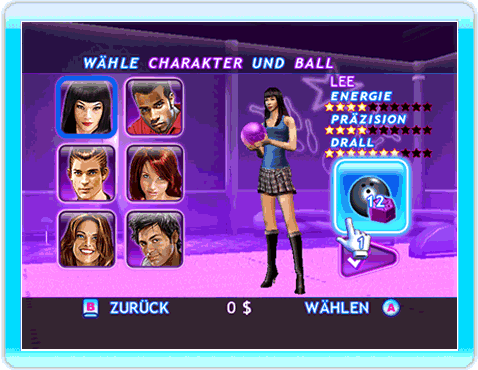
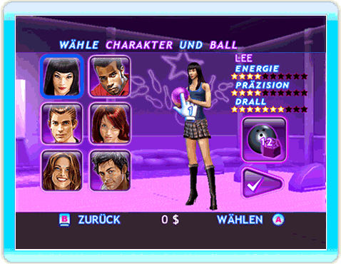
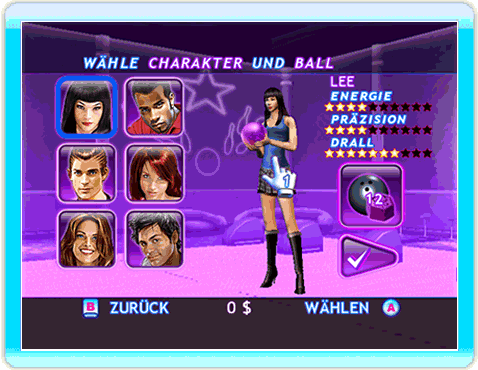

Ballgewicht

Mit einem schweren Ball gewinnst du an Energie, allerdings auf Kosten der Präzision.
Balldesign

Zeige mit der Wii-Fernbedienung auf den Ball und drücke den A-Knopf, um ein neues Symbol zu wählen.
Charakteroutfit

Zeige mit der Wii-Fernbedienung auf den Charakter und drücke den A-Knopf, um ein neues Outfit zu wählen.